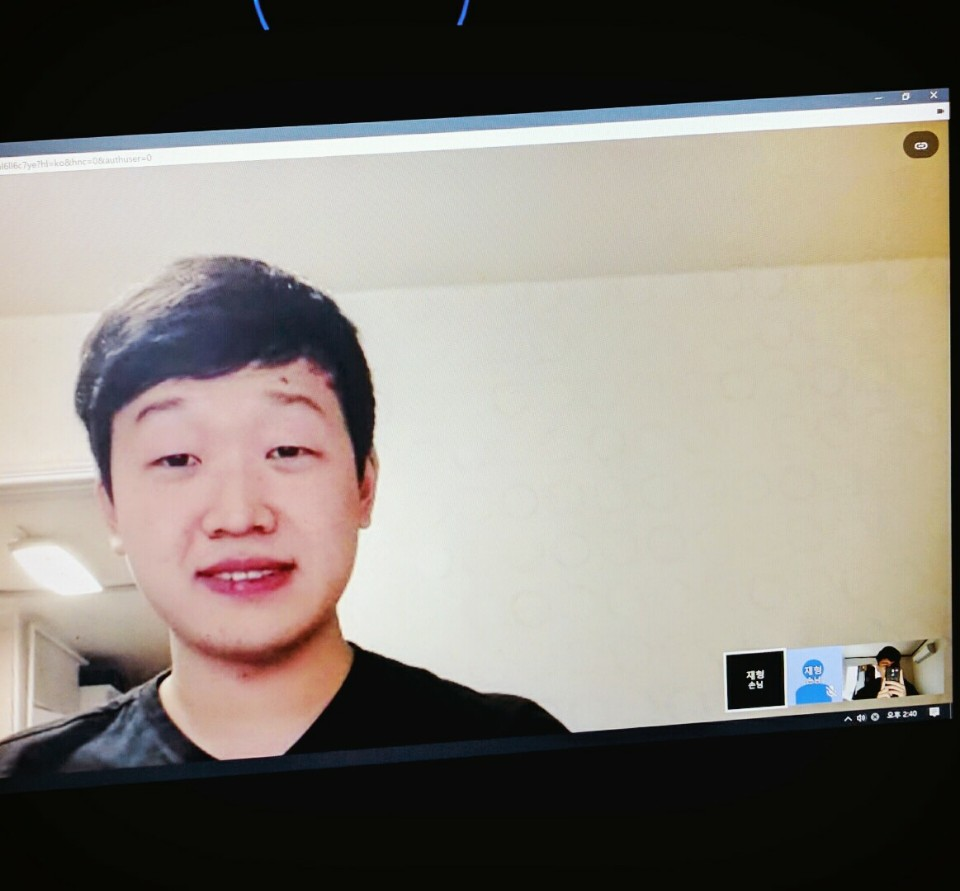
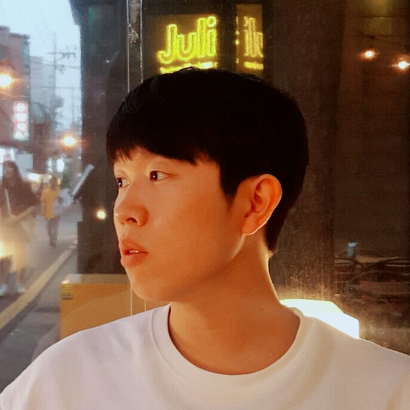
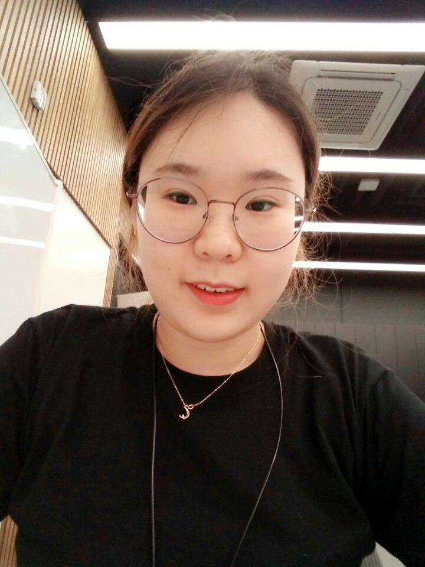

우리들의 이야기

양재형


개발하는 것을 즐기는 양재형이라고 합니다.
취미로는 코딩, 독서, 영화 감상 등이 있고, 먹기 위해 산다고 생각합니다.
어렸을때 네덜란드에서 살다 와서 더치, 양키 등의 별명이 있고, 한국에는
중학교때부터 살았습니다. 게임은 롤을 주로 하고 예전에 코딩 시작하기 전에
너무 많이해서 계정을 삭제했습니다. 계정은 빌려 쓰는것이 여러개 있고, 티어는 골드 정도 됩니다.
하고 싶으시면 언제든지 연락주세요.
프로그래밍 언어는 Python, Java, HTML, CSS, Javascript, C++등을 주로 사용하며,
그 중에는 Python을 제일 좋아합니다~ 요즘 제일 관심 있는 분야는 Machine Learning이고
집에서 Python으로 소규모 프로젝트 몇개 해봤습니다.

최송이
iOS개발자를 꿈꾸는 최송이입니다 :-) 저는 24살이고, 취미는 영화보기랑 피아노치기랑 시집읽기에요. 우아한테크캠프에서 많은 것을 배우고 가고 싶습니다 XD 개발하는것도 재밌지만, 우아한테크캠프 사람들이랑 많이 이야기하고싶어요!! 제가 제일 좋아하는 언어는 Swift이고, C++, Java도 좋아합니다 :) 모두들 화이또

김다인
신선한 야채를 먹는 것을 좋아합니다. 꿈은 요리와 설거지를 하면서 자택근무를 하는 것입니다. 교회를 열심히 다니고 있고 악기 다루는 것을 좋아합니다. 우아한테크캠프를 통해서 실무를 많이 배우고 싶어요. 만난 이들 모두 좋은 인연이 되기를 바래요~

최혜선
Python을 좋아합니다. (잘하는건 ㄴㄴ) 22살이며 대학와서 프로그래밍을 처음 해 봤고 이것저것 잡다한 것을 개발 했었기 때문에 딱히 잘 하는 분야는 없습니다. 웹프론트에 관심이 있는 편이고 잘 하고싶습니다. 특히 클린코드, 테스트코드 짜고 자동화하는것을 잘 해보고싶습니다! 오버워치를 좋아하고 근 반년간 너무 많이 해서 얼마전에 컴퓨터를 팔았지만 같이 게임하고 싶으시다면 친추 걸어주세요!!! 배틀태그 PigFig #3901